✈️ 航班資訊 (HK Express)
去程 UO668
08/26 (三) 10:55 香港 T1 → 15:20 福岡 國際線
已預訂餐點：咖哩豬扒飯 x2、清水 x1
回程 UO669
08/30 (日) 16:15 福岡 國際線 → 19:00 香港 T1
建議辦理手續時間：13:15 / 最遲 14:15 抵達機場
🏨 酒店 1（博多 3 晚）
福岡博多站東方酒店
オリエンタルホテル福岡 博多ステーション
📍 地址：博多駅中央街4-23, 福岡, 日本
📞 電話：+81 92-461-0170
🗓️ 日期：2026/08/26 - 08/29 (入住 3 晚)
♨️ 酒店 2（由布院 1 晚）
由布院溫泉 東匠庵
由布院温泉 東匠庵
📍 地址：由布市湯布院町川南1044-1, 由布, 日本
📞 電話：+81 50-3528-3816
🗓️ 日期：2026/08/29 - 08/30 (入住 1 晚)
🍽️ 晚餐時間：18:45 / 19:45 精緻懷石料理
📅 Day 1 (08/26 三) 香港 → 福岡 → 博多
10:55 - 15:20
航班 香港搭機抵達福岡
UO668 (HKG → FUK)
（HKT T2）U行段Check in；飛行時間約 3 小時 25 分鐘，抵達福岡機場國際線航廈。
15:20 - 16:30
交通 機場過關 & 前往博多站
🚍 路線 Route: 西鐵機場巴士 直行便 (Nishitetsu Airport Bus Direct / 西鉄バス 福岡空港〜博多駅・天神 直行バス)
🚉 車站 Station: 福岡機場國際線 6/7號月台 (Fukuoka Airport Int'l Bus Stop 6/7) → 博多站 (Hakata Station / 博多駅)
🧭 方向 Direction: 往博多站・天神 (Bound for Hakata Station / Tenjin)
🎟️ 資訊 Info: 車程約 25min | JPY 400 | Suica/IC卡或車票 | 班次每 15min
16:30 - 17:00
飯店 博多站東方酒店 Check-in
オリエンタルホテル福岡 博多ステーション
辦理入住手續
17:00 - 19:00
購物 博多站周邊逛街 & Yodobashi
ヨドバシカメラ マルチメディア博多
探索博多車站筑紫口，逛 Yodobashi。
19:00 - 20:15
晚餐 博多一幸舍 總本店
博多一幸舎 総本店
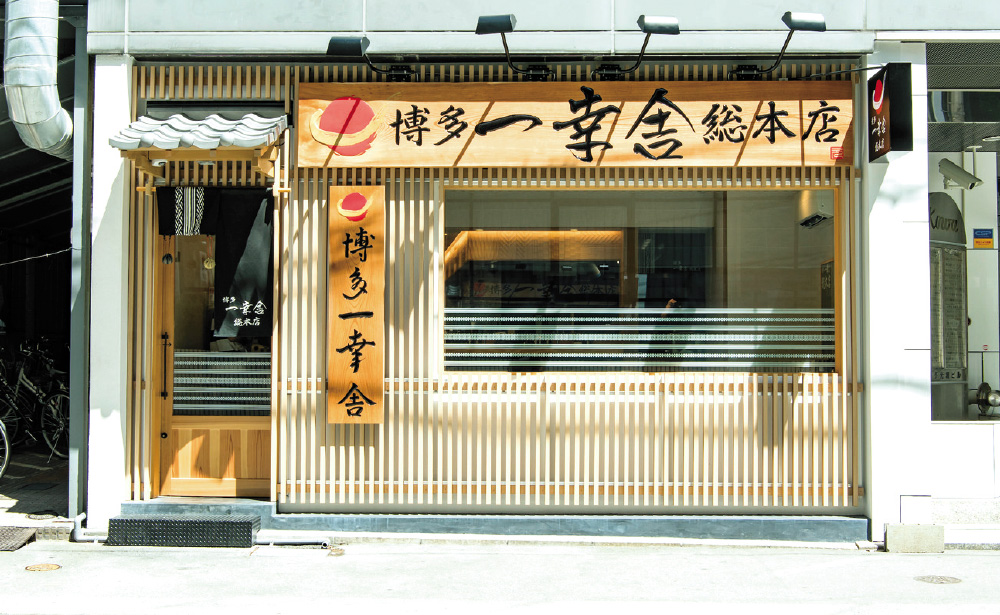
品嚐著名的元祖豚骨泡系拉麵，濃郁湯頭與極細麵條的最佳結合。(950-1550YEN)
20:15 - 21:00
咖啡 Little Honey 咖啡博多站前店
リトルハニー博多駅前店
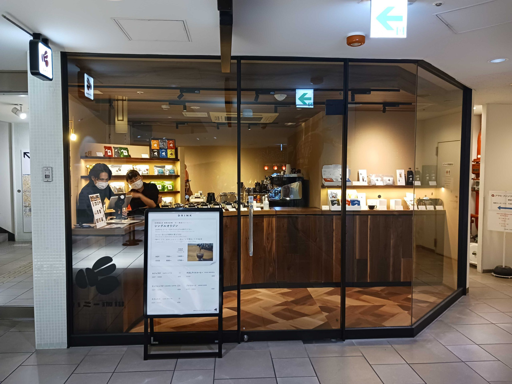
飯後散步至文青立飲咖啡店，選購咖啡豆。
21:00 - 21:45
超市 Yodobashi 上層超市補給
ヨドバシ博多 スーパー
採買新鮮日本水果及零食（營業至 21:00）。
📅 Day 2 (08/27 四) 太空世界・科學館・小倉城散策
09:15 - 10:15
交通 博多站 → 太空世界站
🚃 路線 Route: JR 鹿兒島本線 快速 (JR Kagoshima Main Line Rapid / JR 鹿児島本線 快速)
🚉 車站 Station: 博多站 (Hakata Station) → 太空世界站 (Space World Station / スペースワールド駅)
🧭 方向 Direction: 往小倉・門司港方面 (Bound for Kokura / Mojiko)
🎟️ 資訊 Info: 車程約 55min | JPY 1,130
10:30 - 13:00
景點 北九州市科學館（超人60週年展）
北九州市科学館 SPACE LABO
參觀超人 (Ultraman) 60 週年特別企劃展（門票 1,500円）。
13:00 - 14:00
午餐 極味屋 八幡店（極味や）
極味や 八幡店
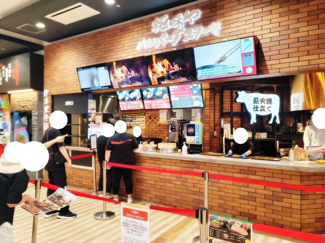
極致美味的自煎黑毛和牛漢堡排與燒肉。
14:15 - 14:30
交通 太空世界站 → 小倉站
🚃 路線 Route: JR 鹿兒島本線 (JR Kagoshima Main Line / JR 鹿児島本線)
🚉 車站 Station: 太空世界站 → 小倉站 (Kokura Station / 小倉駅)
🧭 方向 Direction: 往門司港・下關 (Bound for Mojiko / Shimonoseki)
🎟️ 資訊 Info: 車程約 10-12min | JPY 280
14:30 - 17:30
景點 小倉城散步 & 魚町銀天街
小倉城 / 魚町銀天街
漫步勝山公園，感受古典天守閣風情，順道逛逛旦過市場與魚町銀天街。
18:00 - 19:10
晚餐 天婦羅 Fujishima
天ぷら定食 ふじしま
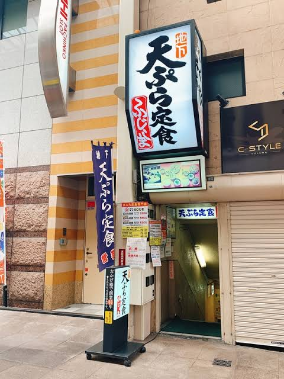
小倉在地人推崇的古早味現炸天婦羅老店。
19:14 - 20:41
交通 小倉站 → 博多站
🚃 路線 Route: JR 鹿兒島本線 區間快速 (JR Kagoshima Main Line Section Rapid / JR 鹿児島本線 区間快速)
🚉 車站 Station: 小倉站 6號月台 (Kokura Station Platform 6) → 博多站 (Hakata Station)
🧭 方向 Direction: 往荒木 (Bound for Araki / 荒木行き)
🎟️ 資訊 Info: 19:14 - 20:41 | 車程 1h 27min | JPY 1,510
20:41
抵達 抵達博多站
返回博多站，回飯店休息補給。
📅 Day 3 (08/28 五) 藥院咖啡巡禮・天神・博多運河城
10:00 - 12:00
咖啡 Coffee County Fukuoka
Coffee County Fukuoka
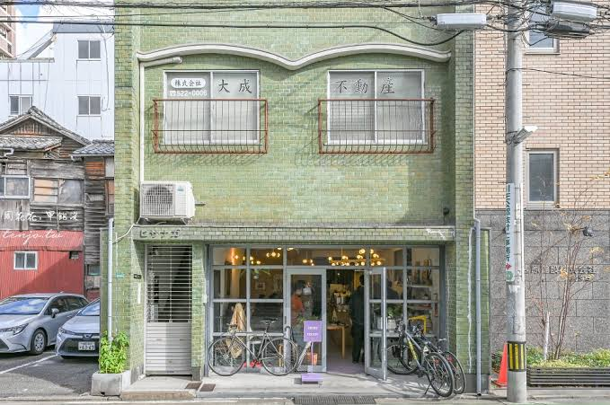
位於藥院的自烘精品咖啡名店，採購高品質咖啡豆。
🚇 交通 Route: 福岡市地下鐵七隈線 (Nanakuma Line)
博多站 (Hakata Station) → 藥院站 (Yakuin Station) | 往橋本方面 | 車程約 7min (JPY 210)
12:30 - 14:00
小吃 櫛田神社 & 櫛田茶屋
櫛田神社 / 櫛田茶屋
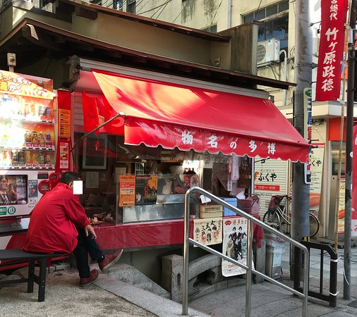
參拜博多總鎮守，品嚐現烤熱騰騰的「烤麻糬（焼き餅）」。
🚇 交通 Route: 七隈線 藥院站 → 櫛田神社前站 (Kushidajinja-mae Station) | 往博多方面 | 約 3min (JPY 210)
14:30 - 16:30
咖啡 天神地下街 & 哈妮咖啡
ハニー珈琲 福岡三越店
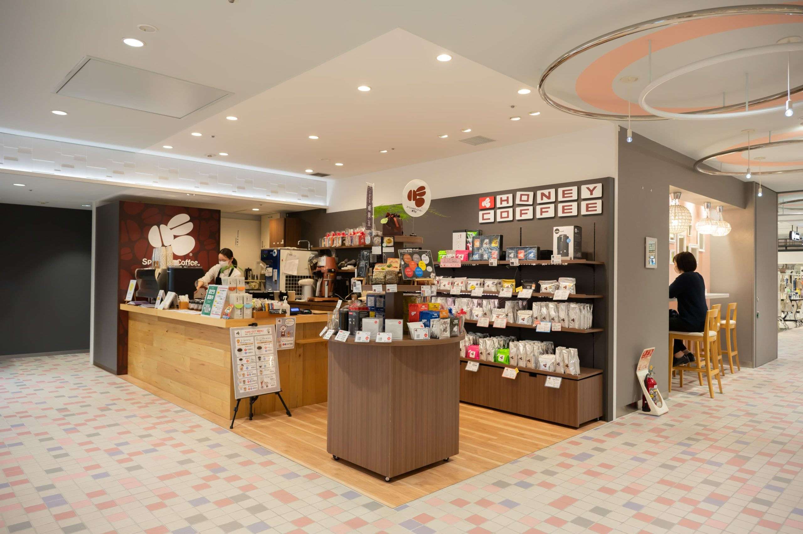
漫步日系歐風地下街，至三越店享用精品咖啡。
🚇 交通 Route: 七隈線 櫛田神社前站 → 天神南站 (Tenjin-minami Station) | 約 2min
17:00 - 19:30
購物 博多運河城 M78 商店
キャナルシティ博多 M78ウルトラマンSHOP
水舞表演與超人專賣店尋寶（由天神徒步或搭乘地下鐵回櫛田神社前站步行即達）。
19:30 - 20:00
交通 博多運河城 → 博多站
🚶 方案 A (徒步 Walk): 沿博多站前通直行，步行約 10-15 分鐘。
🚇 方案 B (地下鐵 Subway): 從運河城步行至「櫛田神社前站」搭乘地下鐵七隈線 →「博多站」（1 站 2 分鐘，JPY 210）。
🚌 方案 C (巴士 Bus): 運河城前公車站搭乘西鐵巴士 (Nishitetsu Bus) 往博多站方向（車程約 5-8 分鐘，JPY 150）。
📅 Day 4 (08/29 六) 特急ゆふ３号・由布院・溫泉旅館
12:19 - 14:38
交通 博多站 → 由布院站
🚆 路線 Route: JR 觀光特急由布3號 (JR Limited Express Yufu No. 3 / JR 特急ゆふ3号)
🚉 車站 Station: 博多站 (Hakata Station) → 由布院站 (Yufuin Station / 由布院駅)
🧭 方向 Direction: 往大分・別府 (Bound for Oita / Beppu)
🎟️ 資訊 Info: 12:19 - 14:38 | 車程約 2h 19min | 已預訂指定席
14:40 - 15:30
飯店 由布院溫泉 東匠庵 Check-in / 寄存行李
由布院温泉 東匠庵
抵達由布院站後，搭乘特約計程車先前往旅館辦理 Check-in 並寄存行李。
⚠️ 計程車搭乘重要提示（需要選擇特定車隊）
車資由東匠庵支付，**需要選擇 Daiichi Kotsu (第一交通産業) / Minato Taxi (みなとタクシー)**。上車時可開啟提示卡（提示詞 1）展示給司機：
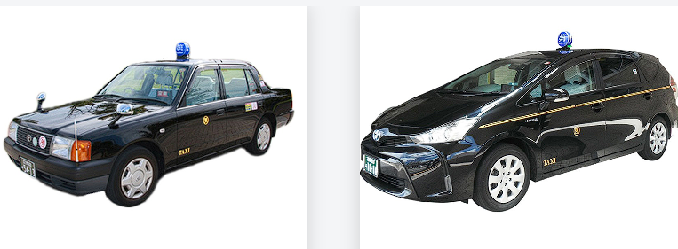
Daiichi Kotsu
(第一交通産業)
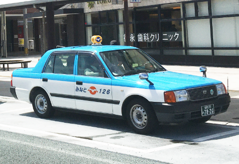
Minato Taxi
(みなとタクシー)
15:30 - 18:00
景點 由布院湯之坪街道 & 金鱗湖散策
湯の坪街道 / 金鱗湖
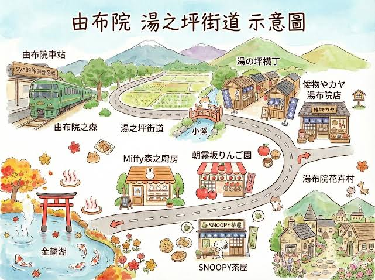
放下行李後輕鬆逛散策小店、品嚐 B-speak 蛋糕捲，一路漫步至湖畔欣賞金鱗湖美景。
18:00 之後
晚餐 返回東匠庵享用晚餐 & 泡湯
由布院温泉 東匠庵
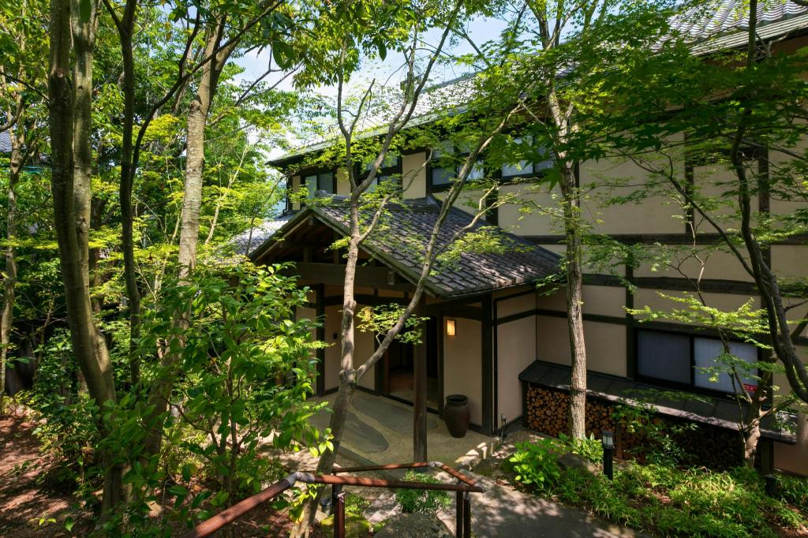
返回旅館休息，於 18:45 享用精緻懷石料理晚餐，餐後享受私人溫泉池放鬆身心。
📅 Day 5 (08/30 日) 由布院 → 機場 → 返港
08:00 - 10:00
早餐 旅館日式晨間朝食
由布院温泉 東匠庵
享用東匠庵熱騰騰的晨間朝食，欣賞由布岳山景。
10:15 - 11:00
交通 旅館接駁計程車 → 由布院車站
🚕 路線 Route: 旅館合作免費計程車 (Hotel Taxi)
🚉 車站 Station: 由布院溫泉 東匠庵 → 由布院車站 (Yufuin Station / 由布院駅)
🎟️ 資訊 Info: 10:15 出發 | 車程約 8min
⚠️ 計程車搭乘重要提示（需要選擇特定車隊）
車資由東匠庵支付，**需要選擇 Daiichi Kotsu (第一交通産業) / Minato Taxi (みなとタクシー)**。可開啟提示卡（提示詞 2）展示給司機：
Daiichi Kotsu
(第一交通産業)
Minato Taxi
(みなとタクシー)
11:00 - 13:00
交通 由布院車站前 → 福岡機場
🚌 路線 Route: 高速巴士 由布院號 (Yufuin-go Highway Bus / 高速バス 由布院号)
🚉 車站 Station: 由布院車站前巴士轉運站 (Yufuin Station Bus Center) → 福岡機場 (Fukuoka Airport)
🧭 方向 Direction: 往福岡機場・博多 (Bound for Fukuoka Airport / Hakata)
🎟️ 資訊 Info: 11:00 - 13:00 | 車程約 2h | 已預訂座位
13:15 - 15:30
購物 機場國內線 & 土產小町購物
福岡空港 国内線ターミナル
辦理 Check-in (13:15)，採買最後伴手禮（如有需要）。
🚌 航廈連絡巴士 Route: 機場免費連絡巴士 (Terminal Free Shuttle Bus) | 國內線 ⇄ 國際線 | 車程約 10-15min (免費/毎 5-8min)
16:15 - 19:00
航班 起飛返港 (UO669)
16:15 福岡國際線起飛，預計 19:00 抵達香港國際機場 T1。